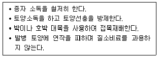

시설원예기사 (2005-03-20 기출문제)
1과목: 원예학개론
1. 절단전정을 강하게 실시할 때 개화결실에 대한 영향은?
- 개화결실 연령이 빨라진다.
- 개화결실 연령이 늦어진다.
- 개화결실에는 영향을 주지 않는다.
- 개화결실이 좋아진다.
(정답률: 알수없음)

2. 철쭉, 란, 그리고 소나무류의 뿌리에는 균근(菌根)이 있는 데 다음의 어느 것과 밀접한 관계가 있는가?
- 칼륨 공급
- 인산 공급
- 질소 공급
- 생장소 공급
(정답률: 알수없음)
3. 오이를 4 ∼ 6월에 출하하기 위하여는 어떤 재배형을 택하여야 하는가?
- 촉성재배
- 반촉성재배
- 여름재배
- 난지억제재배
(정답률: 알수없음)
4. 시금치의 특성에 대한 설명 중 옳지 않은 것은?
- 자웅의 비는 1 : 1 이다.
- 장일에서 화아가 분화한다.
- 동양종은 내한성이 약하다.
- 서양종은 만추대성이다.
(정답률: 알수없음)
5. 주아(珠芽)를 형성하는 화훼는 다음 중 어느 것인가?
- 나리
- 난
- 붓꽃
- 수선
(정답률: 알수없음)
6. 사과 면충(綿蟲, Woolly apple aphid)에 대한 저항성이 가장 강한 대목은?
- M 26
- M 27
- M 9
- MM 106
(정답률: 알수없음)
7. 채소 병해 중 토양전염성인 것은?
- 참외의 흰가루병
- 멜론의 덩굴쪼김병(漫割病)
- 오이의 노균병(露菌病)
- 수박의 탄저병(炭疽病)
(정답률: 알수없음)
8. 어떤 구근류의 휴면타파를 위해 35℃의 고온에 일정기간을 처리한 후 2∼3℃의 저온에 다시 처리하였다고 한다. 이러한 온도 처리 방법은 어떤 구근류에 적당한 방법인가?
- 글리디올러스
- 튜울립
- 수선
- 프리이지아
(정답률: 알수없음)
9. 과실의 경도와 가장 밀접한 관계가 있는 것은?
- 펙틴 함량 변화
- 탄수화물
- 아스코르브산
- 유기산
(정답률: 알수없음)
10. 사과 1년생 가지의 목질부까지 닿도록 깊이 산란하여 연속적인 상처를 내어 가지를 고사시키는 해충은?
- 말매미
- 풍뎅이
- 면충
- 뽕나무 하늘소
(정답률: 알수없음)
11. 웅성불임성(雄性不稔性)을 이용하여 1대 잡종을 육성하여 주로 재배하는 채소는?
- 토마토
- 배추
- 양파
- 양배추
(정답률: 알수없음)
12. 오스만다 루트(Osmanda root)란?
- 회전나무, 붉은 전나무 뿌리이다.
- 습기가 많은 산지에 야생하는 수태를 말한다.
- 습지에 퇴적되어 생성된 이탄이다.
- 고비나 고사리 등의 양치류의 뿌리를 말한다.
(정답률: 알수없음)
13. 월동 중에 있는 과수는 절대온도가 반드시 낮다고 해서 동해를 크게 입기보다는 다른 여러 가지 요인에 의해 동해의 정도가 매우 달라지게 된다. 다음 중 사과에 있어서 동해를 증가시키는 요인에 속하지 않는 것은?
- 질소질 비료를 과다 시비하였을 때
- 인산질 비료를 과다 시비하였을 때
- 생장이 왕성한 어린 나무일 때
- 지하 수위가 높거나 근군의 분포가 얕을 때
(정답률: 알수없음)
14. 난의 조직배양에 있어서 주로 이용되는 부위는?
- 잎
- 생장점(경정)
- 줄기
- 위구경
(정답률: 알수없음)
15. 포도 과육흑변현상(果肉黑變現象)의 주된 원인은?
- 질소부족
- 붕소부족
- 인산부족
- 아연부족
(정답률: 알수없음)
16. 교배육종으로 신품종이 육성은 되나 일반적인 번식은 영양번식에 의하는 식물로 알맞게 짝지은 것은?
- 감자 - 마
- 마늘 - 양파
- 딸기 - 감자
- 생강 - 쪽파
(정답률: 알수없음)
17. 원예작물의 일반적 특징이라고 할 수 없는 것은?
- 계절이나 품질에 따른 가격 변동의 폭이 좁다.
- 이용 부위가 식용과 관상용 등으로 다양하다.
- 채종재배가 별도로 이루어지는 경우가 많다.
- 신선한 상품에 대한 요구도가 크다.
(정답률: 알수없음)
18. 접목 육묘의 목적에 해당되지 않은 사항은?
- 토양 전염성의 병해충 피해를 회피할 수 있다.
- 개화시기는 앞당기고 맛을 증진시킨다.
- 온도 저항성이 강한 대목을 이용해 조기재배를 할 수 있다.
- 대목의 종류에 따라 흡비력이 강해 비료를 절감할 수 있다.
(정답률: 알수없음)
19. 아나나스계 화훼류의 꽃 피기를 촉진시킬 수 있는 물질은 다음 중 어느 것인가?
- 지베레린
- 에칠렌
- 오옥신
- 카이네틴
(정답률: 알수없음)
20. 참외 2대 가꾸기를 위해 가장 알맞은 적심시기는?
- 본잎 1 ∼ 2매
- 본잎 3 ∼ 4매
- 본잎 4 ∼ 5매
- 본잎 5 ∼ 6매
(정답률: 알수없음)
2과목: 시설원예학
21. 온실의 골조 부재의 명칭 중 보(beam)에 대해서 설명한 것은?
- 지붕 위의 하중을 받치고, 대들보, 중도리, 처마도리에 걸치는 가는 부재이다.
- 지붕을 받치는 골조에 있어서 대들보와 처마도리 사이에 있고 서까래를 받치는 수평 부재를 말한다.
- 용마루에 놓이는 수평 부재를 말하며, 보통 중도리와 같은 역할을 한다.
- 수평 또는 이에 가까운 상태에 놓인 부재로서 재축(材軸)에 대한 직각 또는 경사의 하중을 받는다.
(정답률: 알수없음)
22. 태양광의 광도를 나타내는 단위가 아닌 것은?
- ly/min
- W/m2/day
- klux/m2
- kcal/m2/h
(정답률: 알수없음)
23. 박과 작물의 접목 후 활착에 영향을 크게 주지 않는 환경 요인은?
- 광
- 온도
- 습도
- 탄산가스농도
(정답률: 알수없음)
24. 광합성(photosynthesis)과 직접적인 관계가 적은 것은?
- 광
- 질소
- 물
- 산소
(정답률: 알수없음)
25. 양지붕형 온실에 관한 기술로 옳은 것은?
- 광선이 사방으로 균일하게 입사한다.
- 투광율은 낮으며 통풍이 안된다.
- 동서동으로 짓는 것이 일반적이다.
- 골격율과 투광율이 높다.
(정답률: 알수없음)
26. 엘멘도르프 인열강도에 대한 설명으로 옳은 것은?
- 45도 방향의 찢김에 대한 저항 정도
- 직각방향의 찢김에 대한 저항 정도
- 수평방향의 찢김에 대한 저항 정도
- 30도 방향의 찢김에 대한 저항 정도
(정답률: 알수없음)
27. 다량원소의 이온별 권장농도(me/L)가 Ca 6.5, Mg 2.0, K 4.5, NH4 2.0, NO3 11.0, SO4 2.0 및 H2PO4 2.0인 양액을 조제하고자 할 경우 다음 중 각 이온의 첨가량을 충족시키는 비료의 조합은?
- 6.5 me/L Ca(NO3)2ㆍ4H2O + 1.0 me/L MgSO4ㆍ7H2O + 4.5me/L KNO3 + 3.0 me/L NH4H2PO4
- 6.5 me/L Ca(NO3)2ㆍ4H2O + 2.0 me/L MgSO4ㆍ7H2O + 3.5me/L KNO3 + 3.0 me/L NH4H2PO4
- 6.5 me/L Ca(NO3)2ㆍ4H2O + 2.0 me/L MgSO4ㆍ7H2O + 4.5me/L KNO3 + 3.0 me/L NH4H2PO4
- 6.5 me/L Ca(NO3)2ㆍ4H2O + 2.0 me/L MgSO4ㆍ7H2O + 4.5me/L KNO3 + 2.0 me/L NH4H2PO4
(정답률: 알수없음)
28. 온실에는 기본 시설과 부대시설이 있다. 다음 중 부대시설에 해당되는 것은?
- 골조 및 피복
- 난방 시설
- 커튼 개폐 장치
- 관수 장치
(정답률: 알수없음)
29. 온실내의 탄산가스 시용방법이 아닌 것은?
- 유기물연소법
- 액체탄산이용법
- 고체탄산이용법
- 무기탄산시용법
(정답률: 알수없음)
30. 작물 뿌리의 호흡작용에 의한 동화산물의 소모 억제를 위한 최저한계 지온은?
- 13℃
- 18℃
- 20℃
- 25℃
(정답률: 알수없음)
31. 시설의 골격 자재 중 우리나라에서 가장 많이 사용되는 것은?
- 원형강관(pipe)
- 두랄루민(duralumin)
- 알루미늄(aluminium)
- 스테인레스(stainless)
(정답률: 알수없음)
32. 토마토에 많이 발생하는 공동과 현상은 토양 수분이 어떤 조건에서 잘 발생하는가?
- 급변
- 건조
- 과다
- 변동
(정답률: 알수없음)
33. 대기 중의 탄산가스 농도가 350 ppm일 때 작물의 탄산가스 포화점에 대하여 올바르게 설명한 것은?
- 작물의 탄산가스 포화점은 350 ppm 보다는 높다.
- 작물의 탄산가스 포화점은 정확히 350 ppm이다.
- 작물의 탄산가스 포화점은 350 ppm보다 높을 수도 있고 낮을 수도 있다.
- 작물의 탄산가스 포화점은 350 ppm 보다는 낮다.
(정답률: 알수없음)
34. 우리나라에서 주로 공정육묘에 사용되는 육묘용 트레이(tray)의 표준화된 규격은?
- 27.5 × 54cm
- 56 × 56cm
- 31 × 62cm
- 62 × 62cm
(정답률: 알수없음)
35. 고온기 배양액 내 용존산소 함량이 낮아 작물생육과 품질에서 영향을 받을 수 있는 수경재배 시스템은?
- NFT
- 담액수경
- 분무경
- 암면재배
(정답률: 알수없음)
36. 다음 설명은 어떤 병의 방제법인가?

- 덩굴쪼김병
- 풋마름병
- 노균병
- 흰가루병
(정답률: 알수없음)
37. 다음 시설원예 작물 중 최저 한계온도가 가장 낮은 작물은?
- 가지
- 오이
- 토마토
- 딸기
(정답률: 알수없음)
38. 다음 중 현재 방제상 크게 문제시 되는 시설원예작물의 해충이 아닌 것은?
- 외래 해충인 온실가루이
- 약제 저항성인 파밤나방
- 총채벌레와 차먼지응애
- 고추의 해충으로서 고자리파리
(정답률: 알수없음)
39. 양액관리 항목 중 가장 관계가 먼 것은?
- 양액의 pH관리
- 양액의 EC조정
- 양액의 용존산소 관리
- 양액의 습도관리
(정답률: 알수없음)
40. 총 200평 온실에서 240개 트레이를 사용할 수 있는 베드를 12개 설치하였다. 공정육묘용 200구 표준 트레이에서 45일 간 육묘하는(연간 8회) 고추의 이론상 년간 최대생산본수는 얼마인가? (단, 발아실의 이용면적이 무한정이고 발아율은 90%라고 가정한다.)
- 4,147,200주
- 40,147,200주
- 414,720주
- 404,720주
(정답률: 알수없음)
3과목: 재배학원론
41. 온실 내 CO2 시용에서 작물별 적정 CO2 시용 농도범위가 정해져있다. 과채류(오이, 피망)의 CO2 시용 적정범위가 800~1500ppm 이라면 CO2 조절기의 set point는 어느 수준에 맞추어야 경제성과 CO2 시용효과를 극대화할 수 있겠는가?
- 350 ~ 700ppm
- 800ppm
- 900 ~ 1500ppm
- 1500ppm 이하
(정답률: 알수없음)
42. 플러그묘의 생육조절법 중 DIF란?
- 광을 이용한 방법
- 물리적 자극에 의한 방법
- 주ㆍ야간 온도 조절을 통한 방법
- 생장조절제를 이용한 방법
(정답률: 알수없음)
43. 온실의 열교환량에 크게 영향을 주지 않은 요인은?
- 온실의 형태
- 피복재 종류
- 난방기 종류
- 차광망 종류
(정답률: 알수없음)
44. 광합성속도에 영향을 미치는 조건의 하나로서 기공저항과 함께 엽육저항도 중요하다. 원예작물에 있어서 엽육 저항치는 얼마인가?
- 2 ∼ 5 sec/cm
- 6 ∼ 10sec/cm
- 11 ∼ 50 sec/cm
- 55 ∼ 100sec/cm
(정답률: 알수없음)
45. 노점 온도란 무엇인가?
- 포화수증기압과 실제수증기압의 차이
- 건공기 1kg에 대한 수증기의 질량
- 어느 온도에서 최대한 수증기를 함유한 공기의 상태
- 수증기를 함유한 공기가 냉각되어 이슬로 되는 온도
(정답률: 알수없음)
46. 현대화 비닐하우스에 피복되는 외피복재가 근자외선이 차단되는 필름으로 피복하였을 때 나타나는 현상과 관계가 적은 것은?
- 꽃의 착색불량
- 꿀벌의 활동중지
- 꽃등에의 활동중지
- 작물줄기의 절간 신장 촉진
(정답률: 알수없음)
47. 온실의 적응제어에 해당되는 것은?
- 난방부하량에 따라 온수난방에 필요한 온수온도 조절
- 외기온의 변화에 따른 온풍난방기의 운행시간 조절
- 탄산가스 필요에 대응한 탄산가스 발생 환경조절 조성
- 광합성량을 극대화하기 위한 관련 환경요인의 최적조건 탐색
(정답률: 알수없음)
48. 시설재배시 온도측정은 원래 무엇을 기준으로 해야 하는가?
- 배지온도
- 식물체온
- 토양온도
- 군락내의 온도
(정답률: 알수없음)
49. 온도계측시 통풍형 방사방지판을 설치하여 정확도를 높인다. 그러나 방사방지판이 필요하지 않은 측정방식은?
- 저항 온도계
- 유리봉상 온도계
- 0.1mm이하 열전대 온도계
- 서미스터 온도계
(정답률: 알수없음)
50. CO2 조절기(적외선 CO2 분석계)에 의한 CO2 분석과정에서 정확도를 높이는 방법과 거리가 먼 것은?
- 가스도입 경로에서 손실이 없어야 한다.
- 유량변화와 압력변화가 적어야 한다.
- 관리실보다는 온실내부에 설치하여야 한다.
- 샘플용 관에서 흡수, 흡착 및 투과가 없어야 한다.
(정답률: 알수없음)
51. 온도계수(Q10)에 대한 설명으로 바른 것은?
- 온도가 10℃ 증가함에 따라 호흡량은 몇 배가 되는가를 나타낸 것
- 온도가 10℃ 증가함에 따라 광합성량은 몇 배가 되는가를 나타낸 것
- 온도가 10℃ 증가함에 따라 증산량은 몇 배가 되는가를 나타낸 것
- 온도가 10℃ 증가함에 따라 흡수율은 몇 배가 되는가를 나타낸 것
(정답률: 알수없음)
52. 환경을 계측할 때는 여러가지 면에서 주의하여야 한다. 아래에 기술된 주의사한 중 올바른 것은?
- 동일한 대상이나 환경을 변화시키면서 자유로이 측정한다.
- 계측기의 감지부가 측정 대상물과 평형을 이루고 있도록 한다.
- 계측기는 측정대상물의 측정대상 요소를 정확하게 측정할 수 있는 정밀도만 갖추고 있어도 된다.
- 측정치는 대상이나 현상의 각종 집단을 대표하지 않아도 된다.
(정답률: 알수없음)
53. 순방사량을 측정하기에 가장 적당한 기기는?
- 벨라니일사계
- 태양전지식방사계
- 방사수지계
- 관형일사계
(정답률: 알수없음)
54. 비닐하우스에 있어서 환기 전열계수(kcal/m2/hr/℃)의 기준치는?
- 0.0 ∼ 0.1
- 0.2 ∼ 0.4
- 0.5 ∼ 0.6
- 0.8 ∼ 1.0
(정답률: 알수없음)
55. 온실내 광도는 광합성속도에 영향을 미쳐 작물의 생체 변화를 유도하는데 이와 관련이 적은 것은?
- 기공개도
- 엽온
- 증산속도
- 생육적온
(정답률: 알수없음)
56. 최대 난방부하의 결정적인 요인이 아닌 것은?
- 입사광량
- 관류열량
- 환기전열량
- 지중전열량
(정답률: 알수없음)
57. 양액재배에서 배양액의 공급을 늘려야 할 환경조건은?
- 일사량이 적고 온도가 낮을 때
- 일사량이 많고 온도가 낮을 때
- 일사량이 많고 온도가 높을 때
- 일사량이 적고 다습할 때
(정답률: 알수없음)
58. 공장형 식물생산시스템의 초기 기술 개발에 필요성이 가장 낮은 기술은?
- 생리장해의 극복 기술
- 스페이싱의 자동화 기술
- 생물학적 방제 기술
- 인공광원의 개발 기술
(정답률: 알수없음)
59. 순수수경재배에서 용존산소를 높이는 방법이 아닌 것은?
- 급액시 강제 흡입시킨다.?
- 유속을 빨리한다.
- 수온을 높인다.?
- 수온을 낮춘다.
(정답률: 알수없음)
60. 화훼류의 출하시기를 조절할 수 있는 방법은?
- 광강도에 근거한 추적 곡선 적용
- DIF를 이용한 추적 곡선 적용
- 탄산가스를 이용한 추적 곡선 적용
- 일장시간을 이용한 추적 곡선 적용
(정답률: 알수없음)
4과목: 작물생리학
61. C3 와 C4 광합성 작물을 비교한 다음 설명 중 옳은 것은?
- C4 작물은 광합성 능력이 더 낮다.
- C4 작물은 광합성 적온이 더 낮다.
- C4 작물은 수분 이용 효율이 더 높다.
- C4 작물은 광호흡에 의한 소모가 더 많다.
(정답률: 알수없음)
62. 수분(受粉, pollination)만으로도 과실이 비대하는 주된 원인은?
- 꽃가루에 호르몬이 많기 때문이다.
- 일부 필수 미량원소가 공급되기 때문이다.
- 꽃가루와 주두가 친화성일 때만 나타나는 현상이다.
- 수분에 의해 호르몬의 생성이 촉진되기 때문이다.
(정답률: 알수없음)
63. 무기호흡의 결과로 생성되는 최종 산물은?
- 피루브산
- 아세트알데히드
- 포도당
- 알코올
(정답률: 알수없음)
64. 다음 중에서 식물의 수분퍼텐셜을 나타내는 단위는?
- 줄(joule)
- 뉴톤(newton)
- 파스칼(pascal)
- pF(potential force)
(정답률: 알수없음)
65. 겨울눈의 휴면을 유기하는 중요한 환경 요인은?
- 저온단일
- 저온건조
- 단일건조
- 저온장일
(정답률: 알수없음)
66. 가을국화를 단일식물이라 부르는 이유로 가장 적당한 것은?
- 꽃피는 기간이 짧기 때문에
- 식물이 어떤 좁은 범위의 특정한 일장에서만 개화 하므로
- 낮의 길이가 12시간보다 짧아질 때 개화하므로
- 낮의 길이가 한계일장보다 짧아질 때 개화하므로
(정답률: 알수없음)
67. 일정기간 동안에 단위면적당 작물 군락의 총 건물생산 능력을 의미하는 것은?
- 상대생장률(RGR)
- 순동화율(NAR)
- 엽면적기간(LAD)
- 작물생장속도(CGR)
(정답률: 알수없음)
68. 뿌리의 무기양분 흡수에 영향을 끼치는 조건이 아닌 것은?
- 산소의 농도
- 호흡저해물질
- 온도
- 수광태세
(정답률: 알수없음)
69. 작물의 필수원소(必須元素)가 아닌 것은?
- Cl
- Zn
- Mo
- Al
(정답률: 알수없음)
70. 다음 중 삼투현상의 결과로 볼 수 없는 것은?
- 체외에서 식물 세포로 수분의 유입
- 죽은 세포간에서의 수분 이동
- 팽압의 유지
- 꽃의 개화나 기공(氣孔)의 개폐(開閉)
(정답률: 알수없음)
71. 식물의 광주성(光週性)에 영향하는 요인을 설명한 것 중 옳지 않은 것은?
- 적색광은 효과가 크고 청색광은 효과가 적다.
- 광주성을 나타내려면 어느 정도 영양생장이 이루어져야 한다.
- 식물의 질소 영양은 광주성에 직접적으로 영향한다.
- 광주성은 온도의 영향과 별개로 나타난다.
(정답률: 알수없음)
72. 작물의 내건성(耐乾性)에는 원형질적 내건성이 가장 중요하게 작용한다. 다음 중 원형질적 내건성과 관련이 가장 적은 것은?
- 경화(硬化, hardening)에 의해 증감될 수 있다.
- 세포액의 농도나 세포내의 당함량이 영향을 미친다.
- 원형질의 점성 및 세포삼투압이 높아진다.
- 아브시스산(abscisic acid) 처리로 증가된다.
(정답률: 알수없음)
73. 식물체가 증산량이 많아져서 어느 정도 수분 부족을 일으키게 되면 개개의 세포에 일반적으로 나타나는 현상에 해당되지 않는 것은?
- 팽압이 감소된다.
- 삼투압이 증가한다.
- 확산압 낙차(DPD)가 증가한다.
- 원형질막의 반투성이 감소된다.
(정답률: 알수없음)
74. 식물 세포내의 소기관들 중 단백질을 합성하는 소기관은?
- Ribosome
- Peroxisome
- Glyoxisome
- Mitochondrion
(정답률: 알수없음)
75. 호광성(好光性) 종자는?
- 나리과식물
- 상추
- 파
- 호박
(정답률: 알수없음)
76. 종자의 초기 발아과정에 수반되는 생리적 현상이 아닌 것은?
- 탄수화물의 합성
- 지방과 단백질의 분해
- 물의 흡수
- 호흡
(정답률: 알수없음)
77. 종자 내 저장 양분이 거의 없는 원예작물 종자는?
- 수박
- 오이
- 난초
- 페튜니아
(정답률: 알수없음)
78. 광으로부터 유기되어 공변세포에서 기공의 개폐현상에 관여하는 이온은?
- Na＋
- K+
- Ca++
- Mg++
(정답률: 알수없음)
79. 다음 중 광합성과 관련이 없는 회로는?
- Calvin 회로
- Hatch-Slack회로
- Krebs 회로
- CAM회로
(정답률: 알수없음)
80. 수분은 정상적으로 진행되지만 어떤 수분조합에서 수정이 되지 않아 결실하지 못하는 경우를 무엇이라 하는가?
- 화분불임
- 불화합성
- 성적결함
- 웅성불임
(정답률: 알수없음)
5과목: 수경재배학
81. 토양을 분류하는 방법 중 형태론적 토양분류(soil taxonomy)에서 분류의 가장 고차 단위는?
- 통(統, series)
- 목(目, order)
- 과(科, family)
- 대군(大群, great group)
(정답률: 알수없음)
82. 토양 부식의 집적에 대한 설명으로 옳지 않은 것은?
- 공기의 공급이 좋은 조건에서는 집적이 적다.
- 열대지방에서는 집적이 적다.
- 30℃ 이상이라도 습한 상태에서는 집적이 된다.
- 호기성 미생물의 활성이 크면 집적이 적다.
(정답률: 알수없음)
83. 토양 유기물 중 단백질이 분해되면 처음에 어떻게 되는가?
- 질소가 고정된다.
- 암모니아가 생긴다.
- 질산이 생긴다.
- 아질산이 생긴다.
(정답률: 알수없음)
84. 산성이 매우 강한 토양의 교질물에 가장 많이 흡착되어 있는 양이온은?
- Al+++
- Ca++
- Fe++
- K+
(정답률: 알수없음)
85. 경사지 토양에 가장 알맞는 작물재배 방식은?
- 휴한재배(休閑裁培)
- 윤작
- 등고선재배
- 보통재배
(정답률: 알수없음)
86. 비정질(非晶質)토양 광물에 속하는 것은?
- Kaolinite
- Allophane
- Illite
- Vermiculite
(정답률: 알수없음)
87. 팽창성이 가장 적은 점토광물은?
- 몬트모릴로나이트(Montmorillonite)
- 일라이트(illite)
- 버미큘라이트(Vermiculite)
- 논트로나이트(Nontronite)
(정답률: 알수없음)
88. 토양의 입도분석(粒度分析)시 사용하는 분산제는?
- 과산화수소
- sodium hexametaphosphate
- phenolphthalein
- 중크롬산용액
(정답률: 알수없음)
89. 임목 생장에 가장 좋은 토양구조는?
- 입상구조(granular)
- 판상구조(platy)
- 괴상구조(blocky)
- 견파상구조(nutty)
(정답률: 알수없음)
90. 담수로 인해 토양이 환원상태로 되면 인산의 용해도가 증가한다. 그 이유로 가장 옳은 것은?
- 산화철이 환원되므로
- 토양의 pH가 높아지므로
- 토양의 pH가 낮아지므로
- 황화수소의 발생이 증가하므로
(정답률: 알수없음)
91. 인산성분이 가장 많이 들어 있는 비종은?
- 중과석
- 용성인비
- 용과린
- 과석
(정답률: 알수없음)
92. 인산의 형태 중 불용성인산이 아닌 것은?
- 인산3칼슘
- 인산철
- 인산알루미늄
- 인산4칼슘
(정답률: 알수없음)
93. 엽면 시비용으로 가장 많이 시용되는 것은?
- NH4Cl
- (NH2)2CO
- CaH4(PO4)2
- (NH4)2SO4
(정답률: 알수없음)
94. 인산을 과잉 시비하였을 때 나타나는 현상은?
- 노엽은 암녹색을 띄고 1년생 식물에서 줄기가 자주색을 띄는 경우가 있다.
- 분열이 적다.
- 개화결실이 나쁘다.
- 키가 짧고 잎이 두꺼워지고 생육이 나빠진다.
(정답률: 알수없음)
95. 요소(N:46%) 용성인비(P2O5:20%) 황산칼륨(K2O:50%)을 원료로 하여 N : P2O5 : K2O = 2: 2: 1 의 성분비를 가진 복합비료 100㎏을 제조하려고 한다. 각각 필요한 량은?
- 46.0 ㎏, 20.0 ㎏, 50.0 ㎏
- 36.6 ㎏, 51.2 ㎏, 13.6 ㎏
- 43.5 ㎏, 10.0 ㎏, 20.0 ㎏
- 26.6 ㎏, 61.2 ㎏, 12.2 ㎏
(정답률: 알수없음)
96. 다음 중 흡습성이 가장 적은 비료는?
- 염화암모늄
- 질산암모늄
- 황산암모늄
- 황산칼륨
(정답률: 알수없음)
97. 식물체 안에서 질산의 환원에 필요한 미량 요소는?
- Mn
- Mo
- Cl
- B
(정답률: 알수없음)
98. 토양속 칼륨의 형태 중 식물생육에 잘 흡수 이용되는 것은?
- 수용성 칼륨, 치환성 칼륨
- 수용성 칼륨, 비치환성 칼륨
- 치환성 칼륨, 비치환성 칼륨
- 고정태 칼륨, 수용성 칼륨
(정답률: 알수없음)
99. NH4-N의 휘발을 방지하기 위하여 혼용이 가능한 비료는?
- 과석
- 생석회
- 용성인비
- 석회질소
(정답률: 알수없음)
100. 다음의 사경법에 대한 설명으로 틀린 것은?
- 수경법에 비하여 자연상태에 가깝고 뿌리를 기계적으로 유지하는데 편리하다.
- 수경법과 같이 식물의 생리연구에 사용되며, 미량원소의 연구에도 효율적이다.
- 시험에 사용되는 모래는 진한 염산으로 씻어낸 후 모래 1kg에 1∼2g의 탄산칼슘을 가하고 배양액을 첨가한다.
- 배양액의 농도는 수경법일 때보다 약간 높아도 좋으며 액량은 모래의 2/3가 되도록 한다.
(정답률: 알수없음)